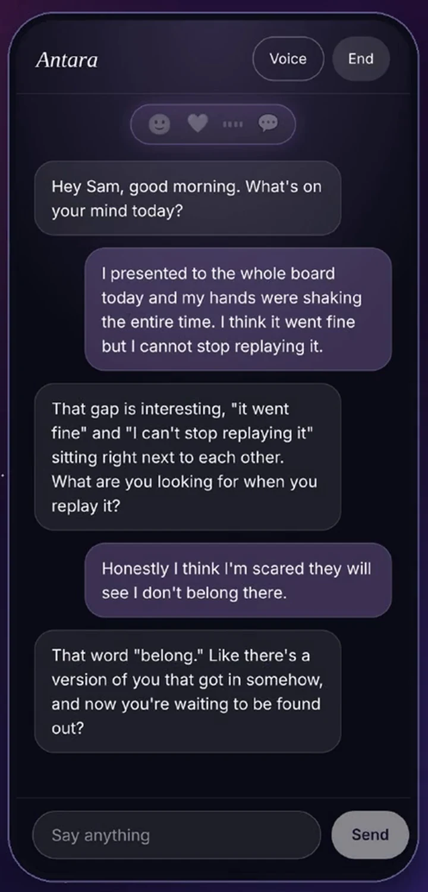
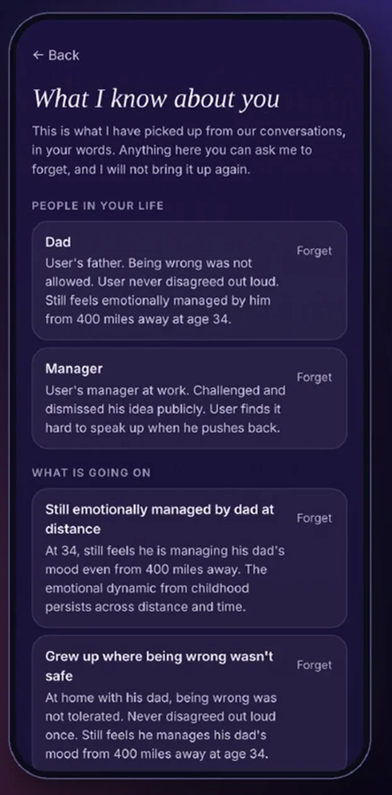
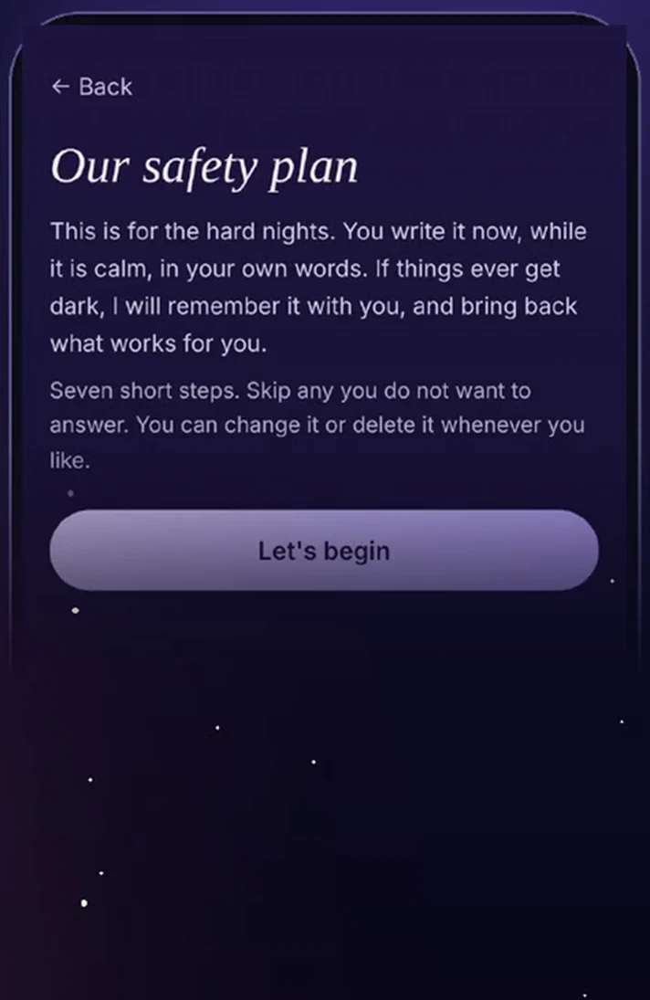

How it works
A calmer way to do wellbeing.
Antara helps you come back to yourself. Away from the noise of everyone else’s voices, closer to your own. It does that in three moves, grounded in neuroscience, psychology and body-based work.
The Antara loop
Three moves, in this order.
Steady your state
Get safe in your body first, so you can stay present without flooding or shutting down. Breathing, the body map, a slower voice.
Make meaning
Small actions that close the loop, so understanding does not become a hobby. Antara asks for one next step, not twelve.
Integrate the parts
Let the body complete and release the stress pattern so the new response is there next time.
The science
Six pillars, with their sources.
These are the ideas Antara is built on. Each one comes from published work, named below. They are the foundation, not a promise of any result, and Antara does not diagnose or treat.
How you connect, and how you pull away
The way you learned to lean on people early on shapes how you handle closeness now. Antara pays attention to that pattern, gently, over time.
Where you meet it: Playbox, Closeness
Bowlby, Attachment and Loss (1969). Ainsworth et al., Patterns of Attachment (1978).
What sits underneath what you say
People often say one thing and carry another. Reflect listens for the gap and asks the one question that opens it, then holds the pattern loosely until it comes back.
Where you meet it: Reflect
Shedler, The efficacy of psychodynamic psychotherapy, American Psychologist (2010).
Words give a feeling a shape
In brain imaging studies, putting a feeling into words has been linked to calmer activity in the brain’s threat circuits. Antara helps you find the word, so the feeling has somewhere to go.
Where you meet it: Reflect, Playbox, Words for Feelings
Lieberman et al., Putting feelings into words, Psychological Science (2007).
Stress is felt in the body first
A tight chest, a clenched jaw, a stomach that will not settle. The brain keeps a running sense of the body’s state, and Heal starts from there, with a body map you tap.
Where you meet it: Heal
Craig, How do you feel? Interoception, Nature Reviews Neuroscience (2002).
Pacing the breath, steadying the system
Slow, paced breathing is studied for its effect on heart rate variability, a measure of how flexibly the body responds to stress. Breathe uses the same idea, with guided patterns.
Where you meet it: Breathe, Heal
Lehrer and Gevirtz, Frontiers in Psychology (2014). Goessl, Curtiss and Hofmann, Psychological Medicine (2017).
Stepping back from your own thinking
Noticing a thought as a thought, instead of being carried by it, is the core move of metacognitive therapy. Elevate uses it to help you plan from a steadier place.
Where you meet it: Elevate
Wells, Metacognitive Therapy for Anxiety and Depression (2009).
Antara is a wellbeing companion. It sits alongside care and does not replace a therapist or a doctor.
Under the hood, in plain words
What she does differently.
Every door shares one memory
Talk, Reflect, Heal and Elevate are one mind. When a session opens she already knows what you said in the last day, the time of day, how long since you last spoke, and how recent openings started, so it is never the same cold line.
Signals become hedged language
Heart rate, facial expression and tone are turned into tentative, therapist-style wording before she answers. If a hard signal and a strong expression show up together she checks in gently rather than announcing a conclusion.
Nineteen foundations, over time
Over many real conversations, never as a form, she gently makes room for the basics of your history: attachment, worth, boundaries, safety and change. Never forced, never repeated once covered.
Two layers, deliberately cautious
An automatic triage with a plain word check underneath it. Check-ins stop after a hard moment, heavy topics wait for two signals, and no selling happens during a crisis flow.

What makes her different
You said, “it went fine.” She heard, “I can't stop replaying it.”
Most apps answer the sentence. Antara answers the person. She asks questions that notice the gap between what you say and what you feel.
- She reads how you write, not only what. Message length, how formal you are, which languages you mix (Hinglish too), the hour you usually turn up. Stored as small averages, never your words.
- She holds patterns loosely. One mention is a hunch. She waits for it to come back before she says anything, and she always says it as something she noticed, not a fact about you.
- Her tone follows yours. Casual with casual, careful with careful. She is built to sound like she belongs in your world.
Memory you can read
She remembers your dad, your manager, the meeting you dreaded.
Everything she knows is written in plain words, in one screen called “What I know about you”. Tap Forget and it is gone.
- Readable. No hidden profile. If she knows it, you can read it.
- Deletable, line by line. You decide what stays.
- One memory behind every door. Talk, Reflect, Heal and Elevate all draw on the same one.

For the hard nights
A plan in your own words.
Built together while you are calm. Brought back when it is dark. Seven short steps. Skip any. Change or delete it whenever you like.
- My warning signs. How I know it is getting dark.
- What I can do on my own.
- People and places that take my mind off it.
- People I can ask for help.
- My own doctor or professional. Helplines for your country are added for you.
- One thing to make my space safer. She never asks for methods.
- What keeps me going.

If the first check fails, a plain one catches it
An automatic safety check reads every conversation. Under it sits a plain word check, because automatic checks can fail. A clear statement of wanting to die is never treated as ordinary.
Helplines for your country
Real lines and emergency numbers, matched to where you are, for more than 180 countries and regions.
Never selling in a crisis
No upgrade prompts during a hard moment. Support is never locked behind points, a plan or a streak.
Small, kind habits
Built to be kind, not to keep you hooked.
Most apps reward you for staying. Antara is written to leave you alone when you need that. These are real rules in the code.
Two notes a day, at your own time
She learns when you are usually around. A warm start in the morning. In the evening, one gentle thought from the day. If you did not talk, a kind “we did not connect today, sleep well”. Never a guilt trip.
Notes carry your name, never your feelings
Other people see your lock screen. Notes can include your first name and plans. They never carry health, feelings, relationships or grief, and that is enforced in code, not left to chance.
Points for showing up, never for talking more
Small, cheap actions earn a little stardust, with a daily cap. It never expires and a missed day never takes any away. Spend it on time to talk.
A small question, days later
“Your chest came up a few days ago. How does it feel today?” One tap. Never about heavy topics, never in the week after a hard moment, at most one a day, and you can switch them off.
She backs off when you ask
Say not now and that topic rests for three days. Say it twice and it rests for a month. Three unanswered asks in a row and everything pauses for two weeks.
Your words, counted. Not a score.
Lighter, about the same, or heavier. That is all it records, in your taps. No percentages, no “you are 62 per cent healed”.
Trust
Privacy you can actually check.
Your camera stays on your phone
Facial expressions are read on the device. The video never leaves it. Only a simple label, like “tense”, can become data, and only if you allow the camera.
Style, not words
The way she learns how you write stores measurements, like average length and time of day. It does not store what you said.
Delete what she knows, or everything
Forget single lines in “What I know about you”. Delete your whole account in the app, or from our deletion page.
Where your words go
To reply, your words are processed through our own server by trusted service providers. The app never holds a provider key. Analytics are opt-in. The privacy policy has the detail.
Who is behind this
A product of Antara Innovations.
Antara Wellness is built by Antara Innovations, a research-first company working on how people and technology can be good for each other. It comes from cyberpsychology and one plain belief: a companion should leave you less alone, not more hooked.